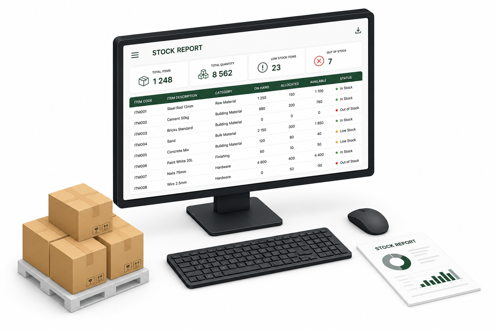

Reporting & integration
Operational data, turned into something usable.
CargoMan converts gate, weighbridge, warehouse, container, and mobile activity into filterable records, exportable reports, and controlled data exchange with the systems around it.
The operational problem
Reporting shouldn't mean manual reconciliation.
When operational data sits in disconnected systems, getting a straight answer means exporting from three places and reconciling by hand.
Without connected reporting
- Weighbridge, warehouse, and gate data live in separate exports
- Report layouts are rebuilt manually for each request
- Connecting CargoMan-style records to other systems means custom, one-off work
- Users see data outside their responsibility because access isn't scoped
With CargoMan
- Records are filterable and searchable from the same operational list
- Packing-list and other reports generate directly from the record
- Controlled APIs, OData-style queries, and SQL views support integration
- Role-based access scopes what each user or integration can see
How the CargoMan workflow works
From operational record to report or integration.
Filter and search
Column filters and text search narrow the operational list down to what's relevant, by client, site, product, or date.
Generate a report
Selected records feed directly into a configured report layout — a packing list, for example — without a manual export step.
Export where supported
Common formats such as Excel, PDF, and CSV are available where configured for the report.
Or query it directly
Integration users can query the same operational data through authenticated OData-style requests, REST endpoints, or SQL views.
Post to another system
Where required, CargoMan can post relevant data to a customer-owned endpoint as part of a site-specific integration.
Key capabilities
What reporting & integration covers.
- Live and historical operational views
- Receive and dispatch transaction reporting
- Stock movement and order balances
- Truck arrivals, site occupancy, and turnaround information
- Container status and movements
- Exceptions, damages, and incomplete processes
- Client-, site-, order-, product-, and date-based filtering
- Export to common formats such as Excel, PDF, and CSV where supported
- Configurable operational documents and reports
- KPI management
Inside CargoMan
Filter, search, and generate — from the same screen.

Stock report & dashboard
Total items, quantity, and stock status roll up into one filterable, exportable report.
Connected modules
Reporting draws from every one of these.
Integration & deployment considerations
Controlled access, described plainly.
CargoMan provides controlled data access and integration options without publishing security-sensitive implementation detail. Site- or project-specific integration is scoped per deployment.
Authenticated querying for filtering, sorting, selecting, and retrieving operational records.
REST endpoints for business processes that don't fit a generic data query.
Role-based integration users with token-secured access, scoped to what each system needs.
Database-level reporting or exchange where that is the best fit.
CargoMan can also post required data to a customer-owned endpoint. Named ERP, accounting, or weighbridge indicator integrations are confirmed per deployment, not assumed.
Where this matters
Any site that needs a straight answer, fast.
Warehouses
Stock movement and order balance reporting without manual exports.
Multi-site groups
Central visibility with role-scoped access per site or client.
Container operations
Packing-list reports generated straight from the container record.
Talk to CargoMan
Let's map your reporting & integration needs.
Show us the systems around your operation, and we'll demonstrate how CargoMan can connect to them.